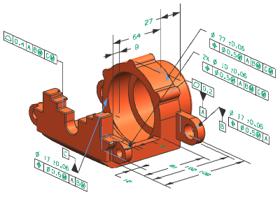

产品制造信息(PMI)是一个 NX 任务环境，用于附着非几何信息到部件文件中，比如文本、尺寸或者符号，您可以在处于其它应用模块中(比如基本环境、建模)时创建 PMI，附着的信息将被下游应用模块使用，比如刀具设计、加工、检测以及船舶制造。
在大多数情况下，您可要将信息附着到部件文件中的任意对象上，信息将在3D 空间中显示，比在2D 图纸中允许您定义更有用的信息。

PMI 对象的示例包括：
|
|
|
工具条 |
标准工具条→应用模块下拉菜单→PMI |